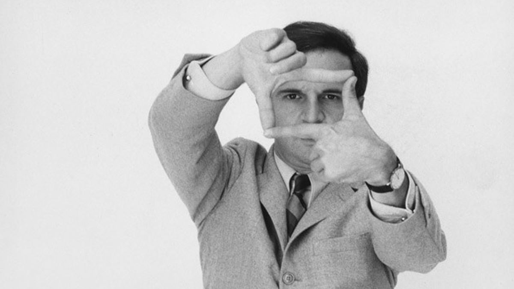
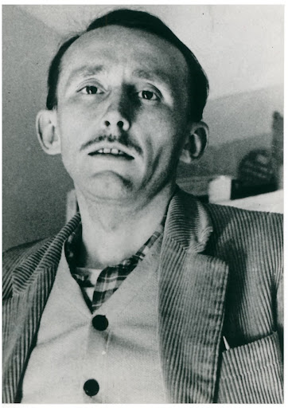
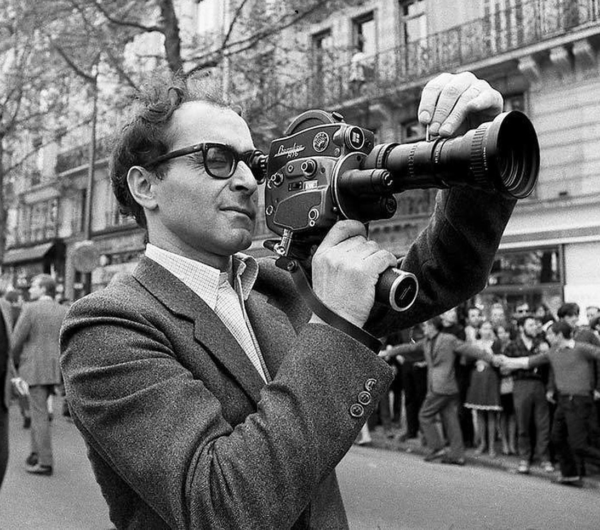

The French New Wave, or Nouvelle Vague, was not merely a list of titles but a profound cultural phenomenon that fundamentally reshaped how cinema was produced, viewed, and theorized. It emerged in the late 1950s as the culmination of shifting economic, political, and aesthetic trends that had been simmering since the end of World War II. Unlike the rigid "teamwork" cinema that preceded it, this movement was defined by a spirit of youthful iconoclasm and a radical rejection of established cinematic forms. While many filmmakers would eventually be associated with the movement, its core was a group of young critics-turned-directors who sought to elevate cinema to the same status as literature and painting.
The roots of the movement were planted in the immediate post-war era, as France sought to reclaim its cultural identity after the Nazi occupation. A pivotal moment occurred in 1946 with the Blum-Byrnes agreement, which allowed a flood of American films—previously banned during the war—to return to French screens. This exposure to classical Hollywood cinema, alongside Italian Neorealism, served as a primary influence for a new generation of film enthusiasts.

Central to this burgeoning film culture was Henri Langlois, the co-founder of the Cinémathèque Française, who became a father figure to the future directors by preserving and screening a vast library of international film history. This institution acted as an informal film school for young men like François Truffaut and Jean-Luc Godard, who spent their days immersed in screenings. Parallel to the Cinémathèque, ciné-clubs flourished across Paris, such as "Objectif 49" and the "Ciné-club du Quartier Latin," where these young cinephiles met to debate film aesthetics and the role of the director.

Quick photo of André Bazin
In 1951, André Bazin, Jacques Doniol-Valcroze, and Joseph-Marie Lo Duca founded the film journal Cahiers du cinéma, which would become the movement’s intellectual headquarters. A group of young, fiery critics joined the magazine and were soon dubbed the "Young Turks". Led by Truffaut, they launched a vicious attack on what they called the "Tradition of Quality"—the high-budget, script-heavy mainstream French cinema that they viewed as sterile and unoriginal.
In 1954, Truffaut published his seminal manifesto, "A Certain Tendency of the French Cinema," in which he condemned the dominance of screenwriters and called for a cinema led by directors who were the true "authors" of their work. This gave rise to the politique des auteurs (the policy of authors), the idea that a director’s unique personal style and vision should be visible in every frame. They advocated for the caméra-stylo (camera-pen), a concept proposed by Alexandre Astruc suggesting that filmmakers should use their cameras with the same freedom and individuality that writers use their pens.
The rise of the New Wave was inextricably linked to the rapid modernization of French society during the 1950s, a period known as "le boom". As the population surged and the standard of living improved, a new postwar generation emerged with different values and leisure habits. However, the film industry faced a crisis as ticket sales dropped from a peak in 1957 due to the rising popularity of automobiles and television.
By 1958, journalist Françoise Giroud coined the term "Nouvelle Vague" in L'Express to describe this new generation, though it was soon applied specifically to the young filmmakers. The political climate also shifted in 1958 with the return of Charles de Gaulle and the start of the Fifth Republic. André Malraux, appointed Minister of Culture, revamped the CNC’s Film Aid program in 1959 to provide "advances on receipts". This institutional change allowed new directors to secure funding for risky, low-budget projects that would have been rejected by the old studio system.
To work within their limited budgets—often between $50,000 and $100,000—New Wave directors embraced a series of technical and stylistic innovations that broke classical cinematic grammar. They rejected massive studio sets in favor of location shooting in the streets of Paris and private apartments. They utilized handheld cameras, such as the Cameflex and Eclair NPR, and faster film stocks that allowed them to shoot with natural or available lighting. The introduction of portable sound equipment like the Nagra III in 1959 further liberated filmmakers, allowing for sync-sound on location and a more spontaneous, documentary-like feel.
These technical freedoms led to signature stylistic markers:

While Claude Chabrol’s Le Beau Serge (1958) and Les Cousins (1959) are often cited as the movement’s first true features, the New Wave gained massive international momentum at the 1959 Cannes Film Festival. Truffaut, who had been banned from the festival the previous year for his harsh criticism, won the Best Director award for his semi-autobiographical debut feature, The 400 Blows (Les Quatre Cents Coups). The film's emotionally raw narrative and iconic final freeze-frame cemented a new era of cinematic expression.
Simultaneously, Alain Resnais’s Hiroshima mon amour captivated audiences with its innovative narrative structure and use of memory. Following this success, the number of first features produced in France skyrocketed, with roughly 160 new directors making their debuts between 1958 and 1963. Iconic stars like Jean-Paul Belmondo, Jean Seberg, and Anna Karina became the faces of this new cinema, bringing a natural, unpolished acting style that appealed to younger audiences. Bold producers like Georges de Beauregard and Pierre Braunberger played a vital role by betting their own capital on these unproven talents.
Historically, the movement is often divided into two main factions:
As the 1960s progressed, the core group began to diverge significantly. Godard became increasingly prolific and radical, moving toward an "anti-cinema" that challenged bourgeois values and filmic conventions in works like Vivre sa vie (1962) and Les Carabiniers (1963). Rohmer, after the failure of his first feature The Sign of Leo (1959), began his celebrated series of Six Moral Tales in 1962 with the short feature The Bakery Girl of Monceau (La Boulangère de Monceau), establishing his signature style of intimate, dialogue-heavy storytelling focusing on the internal dilemmas and hypocrisies of his protagonists. Internal tensions within Cahiers du cinéma reached a breaking point in June 1963, when Jacques Doniol-Valcroze and Jacques Rivette forced Rohmer out of his role as editor-in-chief. They sought to push the journal in a more modernist, left-wing direction, reflecting a broader trend toward political engagement as the movement fragmented.
The movement's unity effectively dissolved around the events of May 1968. Earlier that year, in February, the "Cinémathèque Affair" saw New Wave directors leading massive protests after André Malraux attempted to fire Henri Langlois. While the movement initially expressed solidarity with the student and worker revolts of May '68, the aftermath saw a permanent parting of ways. Godard became ultra-politicized and experimental, while others like Truffaut and Rohmer turned away from overt politics to focus on more narrative-driven, personal cinema.
The New Wave permanently altered the global cinematic landscape, legitimizing film as an art form equal to literature. Its impact can be seen in: